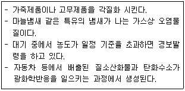

환경기능사 (2007-01-28 기출문제)
1과목: 대기오염방지
1. 과잉공기비 m을 크게 하였을 때의 연소 특성으로 옳지 않은 것은?
- 연소실의 연소온도가 낮아진다.
- 통풍력이 강하여 배기가스에 의한 열손실이 크다.
- 배기가스 중 질소산화물의 함량이 많아진다.
- 연소가스 중의 CO 농도가 높아져 공해의 원인이 된다.
(정답률: 52%)

2. 먼지의 종말침강속도 산정에 관한 설명으로 옳지 않은 것은?
- 먼지와 가스의 비중차에 반비례한다.
- 입경의 제곱에 비례한다.
- 중력가속도에 비례한다.
- 가스의 점도에 반비례한다.
(정답률: 69%)
3. 어떤 집진장치의 집진효율이 99%이고 집진시설 유입구의 먼지농도가 10.5g/Nm3일 때 출구농도는?
- 0.01⑤ g/Nm3
- 1⑤ mg/Nm3
- 1⑤0 mg/Nm3
- 10.5 g/Nm3
(정답률: 56%)
4. 휘발유, 디젤유 등의 연료를 사용하는 자동차에서 주로 배출되는 오염물질로 가장 거리가 먼 것은?
- 구리 (Cu)
- 납(Pb)
- 질소산화물(NOx)
- 일산화탄소(CO)
(정답률: 64%)
5. 후드(hood)의 일반적 흡인요령으로 옳지 않은 것은?
- 충분한 포착속도를 유지한다.
- 후드의 개구면적을 가능한 한 크게 한다.
- 가능한 한 후드를 발생원에 근접시킨다.
- 국부적인 흡인방식을 택한다.
(정답률: 72%)
6. 연료의 불완전 연소시에 주로 발생되는 오염물질은?
- CO
- SO2
- NO2
- H2O
(정답률: 66%)
7. 원심력집진장치에 관한 설명으로 옳지 않은 것은?
- Blow down 현상이 발생하면 입자 재비산으로 인하여 효율이 저하된다.
- 배기관경(내관)이 작을수록 입경이 작은 입자를 제거할 수 있다.
- 입구 유속에는 한계가 있지만 그 한계내에서는 입구유속이 빠를수록 효율이 높은 반면에 압력손실도 커진다.
- 적당한 dust box의 모양과 크기도 효율에 영향을 미친다.
(정답률: 47%)
8. 가스상태의 오염물질을 물리적 흡착법으로 처리하려고 한다. 흡착효율을 높이기 위한 방법으로 옳은 것은?
- 접촉시간을 줄인다.
- 온도를 내린다.
- 압력을 감소시킨다.
- 흡착제의 표면적을 줄인다.
(정답률: 50%)
9. 흡수장치에 관한 다음 설명 중 옳지 않은 것은?
- 충진탑은 온도변화가 큰 곳에 적응성이 크다.
- 스프레이탑은 구조가 간단하고 압력손실이 작다.
- 사이클론스크러버는 대용량의 가스처리가 가능하다.
- 다공판탑은 포종탑에 비해 다량의 가스를 처리할 수 있다.
(정답률: 40%)
10. 황화수소(H2S) 2Sm3를 연소시 필요한 이론산소량은?
- 1 Sm3
- 2 Sm3
- 3 Sm3
- 4 Sm3
(정답률: 40%)
11. 유해가스 처리기술 중 헨리법칙을 이용하여 오염가스를 제거하는 방법으로 가장 적합한 것은?
- 흡수
- 흡착
- 연소
- 집진
(정답률: 43%)
12. 탄소 87%, 수소 10%, 황 3%의 조성을 가진 중유 2kg을 완전연소시킬 때, 필요한 이론 공기량(Sm3)은?
- 8.69
- 14
- 18
- 21
(정답률: 40%)
13. 다음 압력 중 크기가 다른 하나는?
- 1atm
- 760mmHg
- 1013mbar
- 1.013N/m2
(정답률: 76%)
14. 다음과 같은 특성을 지진 대기오염물질은?

- 오존
- 암모니아
- 황화수소
- 일산화탄소
(정답률: 64%)
15. 세정 집진장치의 유리관리에 관한 설명으로 옳지 않은 것은?
- 먼지의 성상과 농도를 고려하여 액가스비를 결정한다.
- 목부는 처리가스의 속도가 매우 크기 때문에 마모가 일어나기 쉬우므로 수시로 점검하여 교환한다.
- 기액분리기는 시설의 작동이 정치해도 잠시 공회전을 하여 부착된 먼지에 의한 산성의 세정수를 제거해야 한다.
- 벤츄리형 세정기에서 집진효율을 높이기 위하여 될 수 있는 한 처리가스 온도를 높게 하여 운전하는 것이 바람직하다.
(정답률: 70%)
2과목: 폐수처리
16. 슬러지 침전성을 나타내는 값으로 SVI가 사용된다. 다음 중 침전성이 양호한 SVI의 범위로 가장 적합한 것은?
- 1000 ～ 2000
- 500 ～ 1000
- 200 ～ 500
- 50 ～ 150
(정답률: 50%)
17. 침전지 또는 농축조에 설치된 스크레이퍼의 사용 목적으로 옳은 것은?
- 침전물을 부상시키기 위해서
- 스컴(scum)을 방지하기 위해서
- 슬러지(sludge)를 혼합하기 위해서
- 슬러지(sludge)를 끌어 모으기 위해서
(정답률: 66%)
18. 염소혼화지에 2,000m3/day의 처리수가 유입되고 혼화시간을 15분으로 했을 때, 혼화지의 수로의 유효길이는? (단, 혼화지의 폭은 1.0m, 수심은 0.8m 이다.)
- 12m
- 15m
- 20m
- 26m
(정답률: 29%)
19. 활성슬러지공법으로 처리하고 있는 어떤 폐수처리시설 포기조의 운영관리 자료 중 적절하지 않은 것은?
- SV가 20～30% 이다.
- DO가 7～9mg/L 이다.
- MLSS가 3,000 mg/L 이다.
- pH가 6～8 이다.
(정답률: 47%)
20. 웨어(weir)의 설치 목적으로 가장 알맞은 것은?
- pH 측정
- DO 측정
- MLSS 측정
- 유량 측정
(정답률: 60%)
21. 다음 중 수질오염지표에 관한 설명으로 옳지 않은 것은?
- pH : 산성 또는 알칼리성의 정도
- SS : 수중에 부유하고 있는 물질량
- DO : 수중에 용해되어 있는 산소량
- COD : 생화학적 산소 요구량
(정답률: 54%)
22. 용존산소가 충분한 조건의 수중에서 미생물에 의한 단백질 분해순서를 올바르게 나타낸 것은?
- NO-3 → NO-2 → NH＋4 → Amino acid
- NH＋4 → NO-2 → NO-3 → Amino acid
- Amino acid → NO-3 → NO-2 → NH＋4
- Amino acid → NH＋4 → NO-2 → NO-3
(정답률: 57%)
23. 다음 황산(1＋2) 혼합용액은?
- 황산 1mL를 물에 희석하여 2mL로 한 용액
- 황산 1mL와 물 2mL를 혼합한 용액
- 물 1mL에 황산 2mL를 혼합한 용액
- 물 1mL에 황산을 가하여 전체 2mL로 한 용액
(정답률: 68%)
24. 어느 하천의 유량은 10,000m3/일 이며, SS는 100mg/L이다. SS의 10%가 침전된다면 그 침전양은?
- 400 kg/일
- 300 kg/일
- 200 kg/일
- 100 kg/일
(정답률: 59%)
25. BOD 측정에 관한 설명으로 옳지 않은 것은?
- BOD가 높은 하수는 희석해서 시험한다.
- 미생물이 없는 시료는 하천수 등으로 식종한다.
- 측정값은 부란전 DO의 80%이상 소비되는 것을 채택한다.
- DO가 과포한 것은 수온을 23～25℃로 통기, 방냉하여 수온을 20℃로 한다.
(정답률: 42%)
26. 바닷물(해수)에 관한 설명으로 옳지 않은 것은?
- 해수는 수자원 중에서 97% 이상을 차지하나 사용목적이 극히 한정되어 있는 실정이다.
- 해수의 pH는 약 8.2 정도로 약알칼리성을 띠고 있다.
- 해수는 약전해질로 염소이온농도가 약 10000ppm 정도이다.
- 해수의 주요성분 농도비는 거의 일정하다.
(정답률: 61%)
27. 다음 중 SVI(Sludge Volume Index)와 SDI(Sludge Density Index)의 관계로 옳은 것은?
- SVI = 100/SDI
- SVI = 10/SDI
- SVI = 1/SDI
- SVI = SDI/100
(정답률: 67%)
28. 폐수처리 공정 중 예비처리인 스크리닝(Screening)에 관한 설명으로 옳지 않은 것은?
- 유입수중의 부유협잡물을 제거하여 후속처리과정을 원활하게 할 목적으로 설치한다.
- 통과유속은 2m/sec 이하로 한다.
- 사석의 퇴적방지를 위해 스크린으로의 접근유속은 0.45m/sec 이상이 되어야 한다.
- 대부분 침사지 전방에 설치한다.
(정답률: 49%)
29. 부상법으로 처리해야 할 폐수의 성상으로 가장 적합한 것은?
- 수중에 용존유기물의 농도가 높은 경우
- 비중이 물보다 낮은 고형물이 많은 경우
- 수온이 높은 폐수
- 독성물질을 함유한 폐수
(정답률: 67%)
30. 생물학적 처리방법과 그 설명이 잘못 연결된 것은?
- 회전원판법 - 미생물 부착성장형으로서 슬러지의 반송이 필요없다.
- 접촉산화법 - 생물막을 이용한 처리방식의 일종으로 포기조에 접촉여재를 침적하여 포기, 교반시켜 처리한다.
- 살수여상법 - 연못화에 따른 악취, 파리의 이상번식등이 문제점이 지적되고 있다.
- 산화지법 - 수심 1m이하의 경우 호기성 세균의 산소공급원은 조류와 균류이다.
(정답률: 57%)
31. 다음 중 살수여상법으로 폐수를 처리할 때, 유지관리상 주의할 점이 아닌 것은?
- 파리의 발생
- 여상의 폐쇄
- 생물막의 탈락
- 슬러지의 팽화
(정답률: 69%)
32. 다음 폐수처리공법 중 고액분리 방법과 가장 거리가 먼 것은?
- 부상분리법
- 전기투석법
- 스크리닝
- 원심분리법
(정답률: 62%)
33. 다음 중 산화(oxidation)반응의 개념으로 옳지 않은 것은?
- 산소와 화합하는 현상
- 수소화합물에서 수소를 잃는 현상
- 전자를 받아들이는 현상
- 산화수가 증가하는 현상
(정답률: 59%)
34. 0.01N - HCl용액의 pH는 얼마인가? (단, HCl은 100% 이온화한다.)
- 1
- 2
- 3
- 4
(정답률: 45%)
35. 박테리아의 경험식은 C5H7O2N 이다. 1kg의 박테리아를 완전히 산화시키려면 몇 kg의 산소가 필요한가? (단, 질소는 암모니아로 무기화 된다.)
- 4.32
- 3.47
- 2.14
- 1.42
(정답률: 29%)
3과목: 폐기물처리
36. 폐기물 관리체계 중 도시폐기물 관리에서 가장 많은 비용을 차지하는 요소는?
- 처리
- 저장
- 처분
- 수집
(정답률: 61%)
37. 연간 3,000,000ton의 도시쓰레기를 3000명의 인부가 수거한다면 수거인부의 수거능력(MHT)은? (단, 일평균작업시간 : 8hr/day, 1년작업일수 : 300days)
- 1.7
- 2.4
- 3.1
- 4.5
(정답률: 62%)
38. 함수율이 97%인 슬러지 3600m3를 농축하여 함수율 94%로 낮추었을 때 슬러지의 부피는? (단, 슬러지 비중은 1 이다.)
- 1800m3
- 2000m3
- 2200m3
- 2400m3
(정답률: 42%)
39. 밀도가 0.4t/m3인 쓰레기를 매립하기 위해 밀도 0.85t/m3로 압축하였다. 압축비는?
- 0.6
- 1.8
- 2.1
- 3.3
(정답률: 55%)
40. 쓰레기 수거노선을 설정할 때의 유의사항으로 가장 거리가 먼 것은?
- 가능한 한 간선도로 부근에서 시작하고 끝나도록 한다.
- 언덕길은 내려가면서 수거한다.
- 발생량이 많은 곳은 하루 중 가장 먼저 수거한다.
- 가능한 한 시계반대방향으로 수거노선을 정한다.
(정답률: 78%)
41. 함수율 50%인 쓰레기와 함수율 90%인 슬러지를 7 : 3 으로 섞어 매립하고자 한다. 이 혼합물의 함수율은 얼마인가?
- 57%
- 62%
- 70%
- 73%
(정답률: 41%)
42. 폐기물 처리기술의 3대 기본원칙이 아닌 것은?
- 감량화
- 안정화
- 파쇄화
- 무해화
(정답률: 43%)
43. Dulong 공식을 적용하여 슬러지의 건조무게당 발열량을 구하는 방법은?
- 원소분석법
- 근사치분석법
- 열량계법
- 열분해법
(정답률: 43%)
44. 다음 중 소각로의 형식이라 볼 수 없는 것은?
- 펌프식
- 화격자식
- 유동상식
- 회전로식
(정답률: 74%)
45. 유기성 폐기물 매립장(혐기성)에서 가장 많이 발생되는 가스는? (단, 정상상태(Steady-State)이다.)
- 일산화탄소
- 이산화탄소
- 메탄
- 부탄
(정답률: 65%)
46. 슬러지 농축방법으로 적절하지 않은 것은?
- 명반 응집제 첨가 농축방법
- 중력식 농축방법
- 원심분리 농축방법
- 용존공기부상 농축방법
(정답률: 33%)
47. 소각시설의 연소온도를 높이기 위한 방법으로 옳지 않은 것은?
- 발열량이 높은 연료사용
- 과잉공기량의 과다주입
- 연료의 예열
- 연료의 완전연소
(정답률: 82%)
48. 폐기물의 재활용과 감량화를 도모하기 위해 실시할 수 있는 제도로 가장 거리가 먼 것은?
- 예치금 제도
- 환경영향평가
- 부담금 제도
- 쓰레기 종량제
(정답률: 65%)
49. 짐머만(Zimmerman)공법이라고 불리며 액상 슬러지에 열과 압력을 작용시켜 용존산소에 의하여 화학적으로 슬러지내의 유기물을 산화시키는 방법은?
- 혐기성 소화
- 호기성 소화
- 습식 산화
- 화학적 안정화
(정답률: 69%)
50. 슬러지의 혐기성 소화처리에 관한 설명으로 적절하기 않은 것은?
- 슬러지의 무게와 부피를 감소시킨다.
- 이용가치가 있는 부산물을 얻을 수 있다.
- 병원균을 죽이거나 통제할 수 있다.
- 호기성 소화보다 빠른 시간에 처리할 수 있다.
(정답률: 50%)
51. 소각로의 종류 중 하부로부터 가스를 주입하여 모래를 띄운 후 이를 가열하여 상부에서 폐기물을 주입하여 소각하는 방법은?
- 유동상 소각로
- 회전식 소각로
- 다단식 소각로
- 화격자 소각로
(정답률: 77%)
52. 소각시설의 연소온도가 너무 높을 때 주로 발생되는 대기오염물질은?
- 질소산화물
- 탄화수소류
- 일산화탄소
- 수증가와 재
(정답률: 49%)
53. 가로 1.2m, 세로 2m, 높이 12m의 연소실에서 저위 발열량이 10,000kcal/kg 인 중유를 1시간에 10kg씩 연소시킨다면 연소실의 열발생률은 얼마인가?
- 2888 kcal/m3ㆍhr
- 3472 kcal/m3ㆍhr
- 4985 kcal/m3ㆍhr
- 5644 kcal/m3ㆍhr
(정답률: 49%)
54. 매립시설에서 복토의 목적과 거리가 먼 것은?
- 빗물 배제
- 화재방지
- 식물 성장 방지
- 폐기물의 비산방지
(정답률: 76%)
55. 완전 연소를 위한 이론공기량을 산출하는 식으로 옳은 것은? (단, 부피기준임)
- 이론공기량 = 이론산소량 × 0.21
- 이론공기량 = 이론산소량 ÷ 0.21
- 이론공기량 = 이론산소량 × 0.79
- 이론공기량 = 이론산소량 ÷ 0.79
(정답률: 53%)
4과목: 소음 진동학
56. 어느 벽체의 투과손실이 32dB 이라면, 이 벽체의 투과율(τ)은?
- 6.3×10-4
- 7.3×10-4
- 8.3×10-4
- 9.3×10-4
(정답률: 54%)
57. 진동측정시 진동픽업을 설치하기 위한 장소로 옳지 않은 것은?
- 경사 또는 요철이 없는 장소
- 완충물이 있고 충분히 다져서 단단히 굳은 장소
- 복잡한 반사, 회절현상이 없는 지점
- 온도, 전자기 등의 외부 영향을 받지 않는 곳
(정답률: 70%)
58. 단진자의 길이가 2m 일 때 그 주기는?
- 0.8초
- 1.2초
- 2.2초
- 2.8초
(정답률: 18%)
59. 다음 중 공해진동에 관한 설명으로 옳지 않은 것은?
- 일반적으로 공해진동의 주파수의 범위는 1～90Hz이다.
- 사람에게 불쾌감을 주는 진동을 말한다.
- 공해진동레벨은 60dB부터 80dB 까지가 많다.
- 수직진동은 50Hz 이상에서 영향이 크다.
(정답률: 40%)
60. 진동수가 200Hz 이고 속도가 50m/s인 파동의 파장은?
- 25cm
- 50cm
- 75cm
- 100cm
(정답률: 39%)